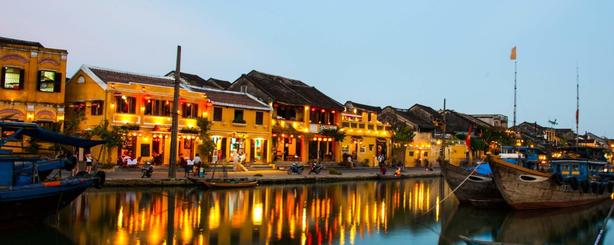
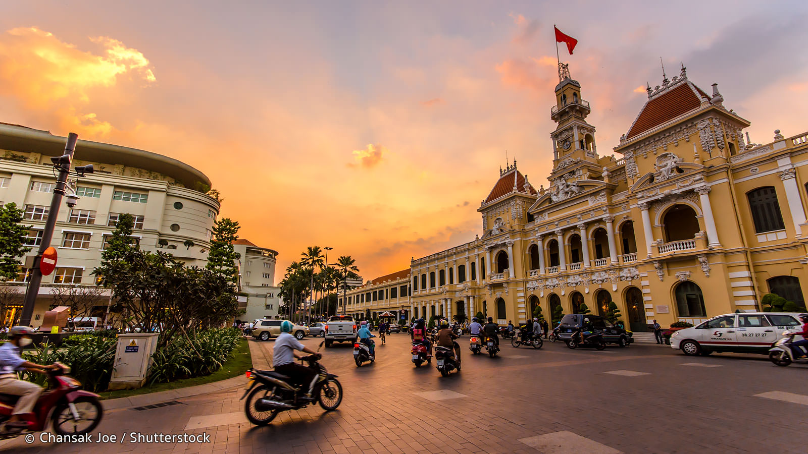
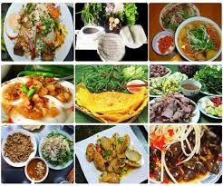

Hoi An Town is an exceptionally well-preserved example of a
Southeast Asian trading port dating from the 15th to the 19th
century. Its buildings and its street plan reflect the influences,
both indigenous and foreign, that have combined to produce this
unique heritage site. Hoi An is about an hour drive from Da Nang
city. The best way is to get a taxi or rent a bike if you dare. In
Hoi An, all motor vehicles have to stop before the town gate because
of the noise prohibition. Renting a bike or walking by feet are the
only 2 options for tourist.
We went there on a weekend afternoon, just before the Moon Festival.
The city was breathtakingly beautiful with its old, fogyish wooden
houses. I was personally touched to see the handmade craft toys
still existed in almost every corner in Hoi An. Moreover, much of
streetfood there reminded me of a good childhood time when you could
play and be silly together with your friends. When the sun set, the
lanterns' light was on, and there was no word to describe how
charming it was. Taking a sib of freshmade lotus tea with a bite of
greenbean cake, while watching people passing by and giggling was a
moment that can never be forgotten.

Sai Gon, or Ho Chi Minh city is where I grow up. When my
grandfather first moving here from 1950, the city was deeply in the
war. Although peace has come now, you can still see the French
colonial landmarks in many parts of the city. In fact, there are
French street name in center disctricts. The French culture has a
strong impact on how we build houses, how we eat and even how we
live our life. Sai Gon is a restless city. When the night comes,
it's the time for the city to wake up and it's strongly said that
you can find anything at anytime. Rules were not followed, and it is
meant in a good way.
Although there are many options for dining, I would strongly
recommened streetfood. How can you get to know the people and
culture better by sitting outsie, next to the locals and eat the
local food? You can try a broken rice dish with roast rib and
meatloaf for breakfast, a hot bowl of noodle soup for lunch and
maybe a huge hotpot meal for dinner to share with friends? If you
want to chill and get a bit tipsy, how about our traditional rice
wine? I'm sure you would find it has such a strong and unique taste
as vodka, or shall we call it the Vietnamese vodka?

Da Nang was our last vacation stop before coming back to
Finland. The last time we were there, it was raining cat and dog.
Luckily, for this time, the sun was shining brighly but not too
botheringly hot, so we were lucky. We reserved a hotel quite far a
bit from the center, but it had amazing view. Oppositing from the
beach with less traffic, we woke up everyday to the blue ocean with
fishing boats in the far distance.
If staying in Da
Nang, you must try the fresh catching seafood and fish. Starting
with some fresh herb salad and lobster, following with grilled
seafood, stir-fried beef stuffed in bamboo shoot and salty panckae,
and tropical, exotic fruits to finish the meal has to be the first
line of your To-do-list thing. And if you wonder what we did during
the time in Da Nang? We did the exact same thing we recommend, plus
hanging aound in the pool watching our toodler ran and yelled
happily. Sure it's fun!